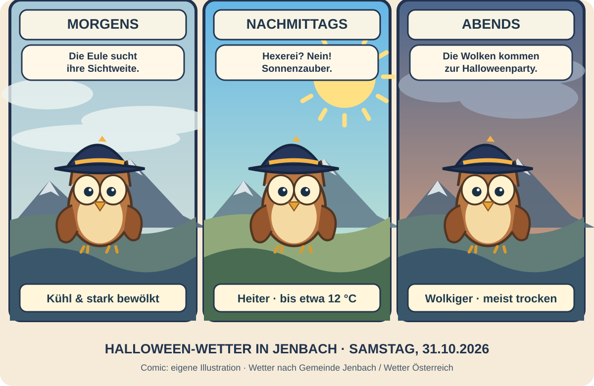

Früh noch grau.
Nachmittags Sonnenzauber!
In Jenbach beginnt der Samstag kühl und überwiegend bewölkt, stellenweise kann es neblig sein. Am Nachmittag lockert es auf und es wird heiter. Gegen Abend ziehen wieder mehr Wolken auf. Die Eule trägt vorsorglich schon ihren Hexenhut.

Wolken am Morgen, heiterer Nachmittag
Die Wetterseite der Marktgemeinde Jenbach erwartet am Samstag, 31. Oktober einen stark bewölkten Vormittag, einen heiteren Nachmittag und wieder stärkere Bewölkung am Abend. Die Temperaturen liegen ungefähr bei 3–12 °C, passend zur Vorhersage von Wetter Österreich. Tagsüber wird kaum Niederschlag erwartet.
Einordnung: Die Gemeinde nennt für den Vormittag rund 3,2–9,3 °C, nachmittags 7,9–11,4 °C und abends geringe Niederschlagsmengen um 0,1 mm. Andere Modelle können abweichen. Sonnenaufgang etwa 06:54 Uhr, Sonnenuntergang 16:58 Uhr laut Wetter Österreich. Für Bergtouren zusätzlich Höhenwetter und amtliche Warnungen prüfen.
„Die Eule hat für Halloween Sonne bestellt – geliefert wird sie erst nach dem Frühstück.“Eigener humorvoller Spruch, kein historisches oder belegtes Zitat.